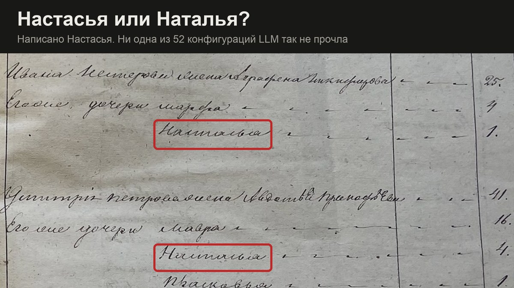

Какой моделью читать старинные документы: 52 конфигурации LLM на рукописях XVIII-XIX веков

Эта статья отвечает на вопрос, какая LLM лучше всего читает старинные документы на русском языке. Для этого я измерил качество работы передовых моделей на специально отобранном наборе записей и сравнил их по числу ошибок распознавания и по стоимости работы. Лучший результат показала Gemini 4 Carbon на low: незамеченных ошибок чтения у нее столько же, сколько у Claude Fable 5.2 и Gemini 4 Neon, а стоит она в шесть-восемь раз дешевле.
Зачем это нужно
С появлением доступных LLM в нашей жизни люди, увлеченные генеалогией, пытаются приспособить их для чтения старинных документов. Мечта о том, что машина сможет быстро прочитать сотни страниц, написанных трудным почерком в непривычной орфографии, и провести анализ, всегда была притягательной. Ранние модели справлялись с этим слабо: либо ошибок было слишком много, либо модель не понимала структуру документа. Но с развитием самих моделей и принципов их использования они стали применимы для задачи распознавания старинных рукописей. Начиная примерно с Gemini 3 Pro, по моему опыту, распознавание документов вышло на приемлемый уровень, и стало возможным встраивание LLM в цикл их чтения.
Сегодня почти все передовые модели читают такие документы и понимают их структуру. Вопрос уже не в том, можно ли использовать LLM для чтения метрических книг, а в том, какую модель брать и сколько это стоит.